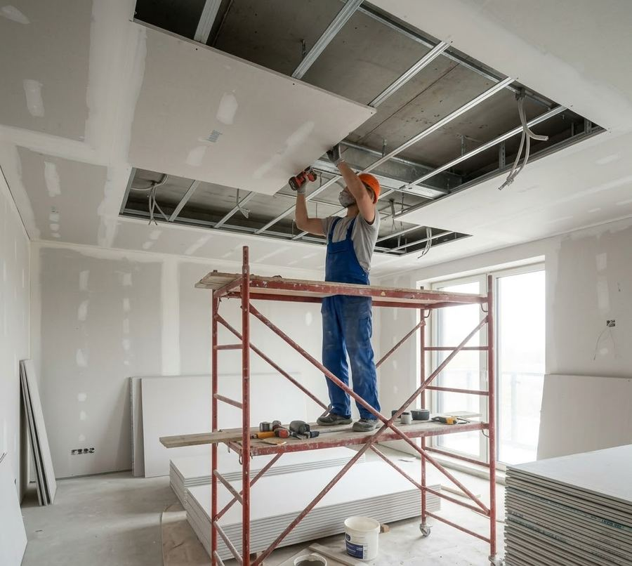

Kleinabriss
Bauten und Bauteile, die komplett weg sollen, vom Gartenhaus bis zur Garage.
Kreis Pinneberg · Schleswig-Holstein
Ob Gartenhaus am Elbhochufer oder Schuppen in Schulau: In Wedel gelten eigene Satzungen für Bäume und Erhaltungsgebiete. Wir reißen ab, trennen Holz, Metall und Schutt und übergeben besenrein.
Wedel liegt an der Elbe, dort, wo die Geest in die Wedeler Marsch übergeht. Die Roland-Figur am Marktplatz stammt von 1558, Stadtrecht hat Wedel seit 1875. Schulau, das sich 1892 mit Spitzerdorf zusammengeschlossen hatte, wurde 1909 eingemeindet. Am 3. März 1943 zerstörte ein britischer Luftangriff erhebliche Teile der Stadt. 1947 war rund die Hälfte der 14.388 Einwohner als Flüchtlinge nach Wedel gekommen, bis 1955 stieg die Zahl auf über 17.000.
Beim Kleinabriss bauen wir zurück, was komplett weg soll, ob Gartenhaus oder Geräteschuppen, Carport oder Garage, Terrasse, Zaun oder Mauer. Holz, Metall und Bauschutt sortieren wir getrennt und entsorgen sie fachgerecht, am Ende ist die Fläche besenrein. Dach- und Wandplatten können Asbestzement enthalten, wenn sie vor dem 31. Oktober 1993 eingebaut wurden. Dann wird zuerst geprüft, und ein berechtigter Fachbetrieb nimmt die Platten unter Schutzmaßnahmen ab.
Die Landesbauordnung Schleswig-Holstein macht es bei kleinen Bauten einfach: Ein Schuppen, für dessen Bau kein Verfahren nötig war, braucht auch für den Abriss keines. Das betrifft etwa einen Geräteschuppen mit bis zu 30 Kubikmetern Brutto-Rauminhalt, solange er keinen Aufenthaltsraum, keine Toilette und keine Feuerstätte hat; im Außenbereich, also außerhalb der bebauten Ortslage, sind es nur 10 Kubikmeter. Ein größerer Schuppen, der frei steht, gehört meist zu den Gebäudeklassen 1 oder 3, und auch deren Abbruch ist verfahrensfrei. Untere Bauaufsichtsbehörde ist in Wedel die Stadt selbst mit ihrem Fachdienst Bauaufsicht, nicht der Kreis Pinneberg. Dort ist jeder Abbruch, der nicht unter die Freistellung fällt, einen Monat vorher anzuzeigen.
Verfahrensfrei nach der LBO heißt nicht, dass keine andere Regel greift. Wedel hat für mehrere Gebiete Erhaltungssatzungen nach § 172 Baugesetzbuch erlassen. Im Ortsrecht der Stadt stehen unter anderem Satzungen für die früheren Sanierungsgebiete der Altstadt (Marktplatz/Rolandstraße und Altstadtrandzone), für einen Teil der Spitzerdorfstraße, für den Voßhagen und für Teilgebiete der Gartenstadt Elbhochufer, wo die Zusammensetzung der Wohnbevölkerung erhalten bleiben soll. Für die Gartenstadt Elbhochufer gibt es zusätzlich eine Gestaltungssatzung.
In einem Erhaltungsgebiet braucht schon der Rückbau oder die Änderung einer baulichen Anlage eine Genehmigung der Stadt. Die Satzung für die Spitzerdorfstraße nennt ausdrücklich den Abbruch. Ob Ihr Grundstück in einem dieser Gebiete liegt, zeigt der Plan zur jeweiligen Satzung. Im Zweifel fragen Sie bei der Stadt Wedel nach, bevor etwas abgerissen wird.
Seit dem 1. August 2020 gilt in Wedel eine Baumschutzsatzung. Nach Angaben der Stadt schützt sie im Innenbereich Laub- und auch Nadelbäume ab 60 Zentimeter Stammumfang, gemessen in einem Meter Höhe, mit wenigen Ausnahmen. Steht ein geschützter Baum direkt am Schuppen, sollte vor dem Abriss feststehen, wie er geschont wird. Ob ein Baum unter die Satzung fällt und ob eine Ausnahme möglich ist, beantwortet die Stadt Wedel.
Ein Container auf öffentlichem Grund braucht eine Sondernutzungserlaubnis. In Wedel bearbeitet sie der Fachdienst Ordnung und Einwohnerservice; der Antrag muss schriftlich und rechtzeitig vor Beginn vorliegen, mit Lageplan und Angaben zu Ort, Fläche und Dauer. Für Baustellen im Straßenverkehr nennt die Stadt die Verkehrsaufsicht und den Bereich Öffentliche Flächen als Ansprechpartner, dort gibt es auch ein Merkblatt zur Haltverbotszone. Welche Erlaubnis Ihr Abriss braucht, klären wir beim Besichtigungstermin.
Neben dem Kleinabriss übernehmen wir in Wedel auch die Entkernung von Wohnungen und Gewerbeflächen, den Innenabbruch in bewohnten Häusern und anschließenden Trockenbau. Mehr zum Abriss kleiner Bauten steht auf der Seite Kleinabriss. Wir starten in Hamburg-Altona, und die Anfahrt nach Wedel ist im Festpreis enthalten. Für das Nachbargebiet gibt es eine Seite zu Schenefeld. Ihr Vorhaben schildern Sie im Anfrageformular.
Leistungen
Bauten und Bauteile, die komplett weg sollen, vom Gartenhaus bis zur Garage.

Räume bis auf den Rohbau zurück, z. B. vor einer Sanierung.

Gezielter Rückbau einzelner Bauteile in bewohnten Häusern.

Nach dem Abriss direkt neu aufbauen, ohne zweite Firma.
Häufige Fragen
Nach der LBO in der Regel nicht. Ein freistehendes Gartenhaus darf ohne Verfahren beseitigt werden, ebenso ein kleines ohne Aufenthaltsraum, Toilette und Feuerstätte. Liegt das Grundstück aber in einem Erhaltungsgebiet oder ist der Bau ein Kulturdenkmal, kann trotzdem eine Genehmigung nötig sein.
Nein. Wedel ist selbst untere Bauaufsichtsbehörde, Ansprechpartner ist der Fachdienst Bauaufsicht der Stadt. Der Kreis Pinneberg übernimmt diese Aufgabe nur für die Gemeinden ohne eigene Bauaufsicht.
Grundsätzlich ja. Nach Angaben der Stadt sind im Innenbereich Laub- und Nadelbäume ab 60 Zentimeter Stammumfang in einem Meter Höhe geschützt, nur wenige Arten sind ausgenommen. Ob Ihr Baum dazugehört, sagt Ihnen die Stadt Wedel.
Holz, Metall und Bauschutt trennen wir schon beim Abbau und entsorgen sie fachgerecht. Die Entsorgung ist im Festpreis enthalten.
Kontakt
Kostenlos und unverbindlich. Wir melden uns innerhalb eines Werktags.
Einsatzgebiet